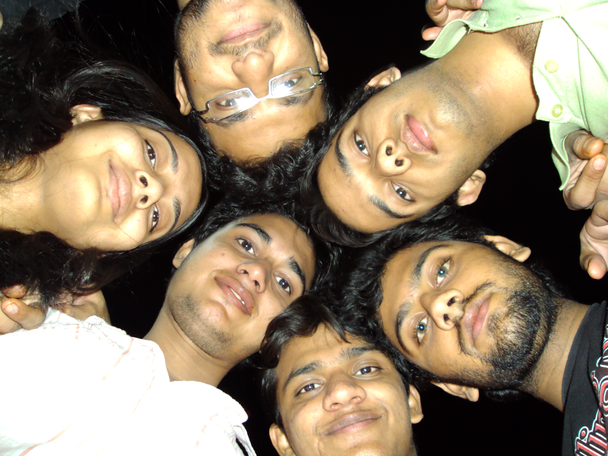

The Yearbook - Commemorating 2005-09!
Prashasti Gupta's profile information
Name - Prashasti GuptaBirthday - 07-02-1988
Email - prashastigupta@gmail.com
Address - Mandla,M.P
Phone - 9948492513
Hobbies - these days...watching sitcoms and movies
WishList - home theatre, lancer,trip to paris
Memorabilia - Felicity-08...last day..after DJ
What would you want to be remembered as - Prashasti :)-unique name:D
Future Plans - hmm...,job...then PG,..then job...
Testimonials written to Prashasti Gupta
Prashasti Gupta's Album

4

coffee

{kind=link}
friends
Testimonials
For Shikha AggarwalShe is hard working, focused and totally dedicated to her work ..

We have spent 1 semester literally living in each others room, yup , we ate together, went to classes together, outing together,...
We had this group of four ppl..and we had enumerable walks,talks,outings...and it was all fun....
 ..cheers to that group
..cheers to that group
Her hard work has earned her MS intern,Google job and IIM calls..
...
All I can say is that -'Know what you want from your life and always be happy..
'
Wishing you loads of luck

For Ajay Somani
for your coding skills :

For Gaurank Khatri
G Khatri wouldn't be expecting this..

I was always scared of him ...for what I don't remember...I always got 'Khatarnak Khatri ' kind of feeling from him...
I always kept a distance from him in first three years..then I took maroo's advice and started talking to him some 2 weeks ago...and i must say he is hilarious ...damn witty...
..
Aajkal lunch mein khatri ke hi karan Rounak lagi rehti hai ...m enjoying leofying him
 ...
...
Bechara...
 poora batch hi peeche pada hai Khatri ke...
poora batch hi peeche pada hai Khatri ke...
He is awesome at cricket also....aur gossip mein to jawab hi nahin...
I sincerely hope tujhe BOA mein hyderabad hi mile
All the best ...keep in touch
For G. Rohit Bharadwaj
First year: I came to know he was my partner in ece project ...and he never showed up
 ...other one being saurabh...who didn come either
...other one being saurabh...who didn come either
Third Year: Campaigning core committee meeting, arguing with him, on how to campaign, when to send posters...etc.
.But it was fun working with you guys
He is committed to his work and member of our batch cricket team
All the best
For Dharmeet Singh
He is one of the down to earth persons I know....
he is sweet and extremely religious
... he is working hard for Samvedna ...
All the Best
For Aniket Sharma
Our conversations were restricted to a casual hi and sometime not even dat...though we used to talk at the college beginning...
But two things which I like about him is his writing skills
and his stamina in sports...
well we were house captions of rival houses but never actually got into any fight
...
The work he is doing for Samvedna is also commendable...he has written some of the nicest posts I have read...
He is quite an open minded individual
...and has his unique ways
And he left smoking ...
All the best for ur future
Good luck
For Akash Agrawal
I used to talk to him in first year...workspace rocks
....The most fond memory of him is he used bring pade from his home town and they were delicious...simply awesome
Last three years we have had casual greetings only ...
All the best ..wishing you lots of luck
For Abhijeet Pagare
He is cute, sweet, unpredictable ...
Abe teri testi mein araam se likh kar orkut pe daal doongi...abhi badi testi nahin likh sakti

All the best
For Vibhav
He is a true researcher in every way..till 2nd year he was one among us...but he changed in 3rd year...he was then this dedicated guy who didn used to sleep for 2-3 nights in continuation to work...he did all the dip assignements and I copied from him
...he taught a lot of vision subjects to us...In one year he transformed completely ... well I love his maggie noodles hairs ...awesome curls hai ....he is this carefree person jiske liye uski research hi sab kuch...I often suggest him to get a room in cvit lab itself ...coz he hardly stays at room...
But he is very helpful...from lending assignments,using his megatron, solving my doubts, encouraging me for MS, showing so much confidence in me when I wasn't sure of myself...
he told me once 'If you cannot do it then nobody else can ' -so sweet of him....
He has always been a source of inspiration...
When we think of home theatres,cars, etc... he thinks of owning jet airplane etc..
He has an altogether different outlook of life...
To tell it in one word 'he rocks
'
All the Best
Keep in touch
For V.V.Chaitanya Krishna
hi...
She is this simple guy next door...is very helpful...helped me in organizing sports events...then he was in campaigning and hospitality with me ...and we managed pretty well...
All the best
For sushma nadella
She is a sweet girl ,extremely hard working and focused...got calls from a lot of university
All the Best
Make the most of ur life
For Sunil Soni
well...we share a common trait, we both belong to lean category....and we often end up fighting who is thinner...
But the guy has cracked a lot of written tests during the placements
....I remember our first day..where we were all waiting for MS interviews...he was damn nervous ...but he did fairly well
And just that you know ...you are thinner
All the best
For Subroto Sen
I totally owe my computer science in IIIT to subroto...he was the last to get ece...agar usne nahin liya hota tu mujhe mil jaata
 ...
...
All the best for ur future
For Srujan Kumar
hi,
It wa really nice working with you during felicity...all those arguments, discussions,...trips for campaigning ...everything
All the Best
For Srirang Ranjalkar
well he is super cool..u ll always find him smiling
....well he hates it but he is cute ....
Songs ka database hai ...machane mein bhi kam nahin hai
...bc karne ke liye eveready ....
He is among those selfless people who wishes good for everyone and is always happy
I regularly ping him for querying about his status messages
...
Keep up ur spirit.
Wish u all the best
Keep in touch
DJ Ranga
For Spandana
sweeet girl...PJ queen...helpful and frank...has worked her way with hindi ..
All in all very nice girl..
all the best
For Siva Reddy
All I knew about him before placements was -"he is a bond"...if ou have a linux problem ...ask Sivareddy...
But during placements I came to know he is a very helpful person
...every morning ...when all of us will be nervous...half slept...he would be there standing with a smile ....
Thanx a lot for being a support for entire batch during placements
He is a LTRC bond too...recently came to know about it
All the Best
Keep in touch
For Shrikant Nigam
The Ganjas
The first time we talked was on our first trip of college
...to lumbini park and NTR gardens....I didn like him in the beginning...he was reserved...spoke rarely....but later on I started liking him
Whenever somebody would tell him...'tu kitna chup kyun rehta hai kuch bolta kyun nahin'....he used to get mad...
Also if you tease him with any girl he gets irritated often
....you remember salma,....
He is an awesome photographer though...had a great time with him during photowalk to shilparamam
...he also gives a lot of tips on photography...
The work he did for campus decoration was awesome during Felicity08...our campus has never looked better
He is a complete gentlemen though
All the best the Ganjas...Kantas
Keep in touch
For Shalini
Sweet girl...but a bit shy...never got an opportunity to know you...
All the best for your future though
Keep in touch
For sashidhar
He is awesome
I remember him from first year when he used to mimic donald duck voice..
...it is always fun to be with him...he is one of a kind...very sweet and simple he is .....whenever you meet him he will always greet you with a smile.....he is very innocent also...dunno how you are surviving in CVIT...
All the best yaar ...
I really hope you get out of cvit soon
You are simply awesome
For sana
hey..
All I know is that he is a very helpful person..he has helped me a lot in organizing vayu events
...
Thanx a lot for helping me out
All the Best
For Sambhav Jain
Sambhav was among the first few friends I made in IIIT. He is good at almost everything be it singing,acads, organizing an event, sports, shopping,cooking or chatting...
I have had some of the most memorable trips of my btech with him . The list is :
1. My first trip ever to lumbini park and NTR gardens...that was one hell of a trip ...
2. Awesome trip to Ramoji..
3. Diwali lunch at his Di's house
4. Maggie party at his Di's house..
5. Juniors hyderabad bhramand
...
He is an awesome being ..you will never find him nervous or angry...he is always calm and composed...he is fun loving...ghumne ka bhaut shauk hai
...shopping bhi awesome karata hai ..gappe marne mein to bade maze aate hai iske saath...I used to tell him -"teri wife badi lucky hogi " in first year...
Its fun to organize events with him...he has good knowledge of stuff...
..we organized hyderabad trip for juniors ...and with irritating Vinayak sir on our head...he was the only one who was calm......
He has done so much in so many ways for institute and our batch ...
As a placement coordinator he has also done a gr8 job...even when he was not the one with a PPO..
All the Best yaar
Keep in touch
For Sahiti Polishetty
In the first year I knew her only for the fact that she used to go home every evening
...
But then we had great rapport when we started talking...she is a kid...cant stay without her family ..
...I have tried to convince her several times to stay at college but she never changed..
But we have had a lot fun times together ...be it chats in the lab...sharing food items in lab...her parents visiting campus and she has amazing sweets at her room, when we visited her home ...awesome poor iand chole an the movie watching after wards ..remember we watched naina..

Among all these most memorable one is the time we spent during placement preparation....we used to study together..supporting each other when one couldn't solve a problem...
She is very sweet,hard working and an amazing person
Congrats for getting Georgia tech , CA and google women in engineering award
Be confident and go for your MS ...
All the Best
Keep in touch
For Randeep Singh Banga
I remember him from English first class...where we were supposed to introduce ourselves...and all I could understand from his introduction was ...he is a very religious person and loves his home town
He is an extremely dedicated and sincere student ...as most of us started taking courses lite in 4th year ..he was still dedicated...
A perfect gentlemen in many ways
...I was so jealous of him in 4-1...he was placed and used to go to his home every month....
The effort he has put in Placement is really commendable
...we couldn't have better Placement coordinators ..Thanx a lot
Apart from acads...he is a really kind and simple person...you can say so after first meeting wiht him itself ..
All the Best
Keep in touch
For Ramya Yaragani
well..this girl over her is quite dedicated to her work....I was quite amazed how one can work so hard for acads...
...But her hard work has paid off...her cgpa..her google intern...her google job...and is writing a research paper ...
I remember when we used to make noise in the corridor
and she used to study ...she used to be so angry on us 
But has a thorough knowledge of all the courses she has taken..and loves watching Telugu Movies
All the best
For Raman Jain
I have heard a lot about him from my friends...
He is like this mirror..where nothing is hidden...he is a straight forward person ..who often ends up in trouble coz of 'I speak before I analyze' kind of nature...but it is easy to know this guy ...
He loves sleeping and pulling Vipul's leg..
..
Jaws se bahut darta hai ...I remember when we used to meet outside Jaws's room for meeting...and used to ask everyone who came out .."what happened?, Jaws ka mood kaisa hai ? teri bahut maari kya ?"...he used to be so scared of him....but he started working in 4th year...got a paper published aur jaws ka fav ho gaya hai ...
I sincerely hope tu time par nikal jaye ...but I have my doubts
All in all a nice person who is 100% genuine..no faking
All the Best yaar
Bhagwaan aur Jaws kare ki teri thesis time par ho jaye
For Prateek G V
well he is a very descent,down to earth and helping guy...he is very enthusiastic and responsible..the work he had done for felicity, placements and now for Samvedna is truly appreciable
...
One of the fond memories is when he told me I got placed in Amazon....he was the first one to tell me...and then he said,"Act as u didnt know in front fo company employees ...act surprised.. "..I tried ..
Thanx for working so hard for entire batch during placement
As I hear, he is a very decent guy, perfect gentlemen and has a good sense of humor...
All the Best
Keep up your good work
For Prashant Mathur
My fellow vayuite...I know him from Vayuhouse freshers practice...where we all danced...
Then again from Cult nite dance where he was my dance partner ...it was fun ..
...All I know is that he is hard core gamer and movie freak ...
All the Best for your thesis and future
For Pankaj Saini
I remember him from our english classes...he was this guy who used to talk about India,politics, Chandigarh all the time...used to wear formals then and gave a stay away from me kinda impression...
But he has changed drastically over last four years..he is a die hard fan of movies and novels
...has a keen interest in HSSM courses
The only memory could remember is we fight every time we talk ...once swatidi,pankaj and me were sitting near volleyball court and all i remember was I and Pankaj were fighting aur swatidi beech mein fans gayi thi ..
...
Anyways, all the best for your future
For Pankaj Anthwal
This guy is truly an all rounder
...gana,bajana,nachna,khelna ,koodnaho ya padhna ...he is good at everything ...I love his mimicry ..when he is on stage ..he entertains everyone ...well he calls me with different names ..Prafufti...But is always found with a smile
All the Best
Keep Rocking
For P Sharat Chandra
From what I know I write
This guy is quite different from a lot of ppl I have met so far...he is damn cool..he has his own unique ways ...he can be termed as unconventional...
He has this different approach towards life...
His project ideas are quite interesting ..like the one abt the music and all..
I have interacted quite a little but have enjoyed all the conversations
..and seriously three proposals ...
All the best ..and keep coming up with interesting ideas..
Keep in touch
For Navatha Tatineni
well...
my fellow vayuite..
I met her at vayu Fresher's preparation for the first time
..
This girl is quite confident and is good at a lot of things
...be it cultural or sports ....
Her enthusiasm is really good
...we were project partners for ITWS project...and I fondly remember all those days when we breaking our heads to find the bugs in the code ...it was fun
All the best
For Namrata Suri
hmm...She was among the first few ppl I met in IIIT...we were wingmates in the first year ..
...she used to tell us a lot od stories then spanning all genres : horror,romantic,...she is a good story teller...and then there were conversations when she used to tell us abt the Jail she lived in for two years and all...well she being on of the few ppl who could speak hindi fluently was one of my first friends in IIIT....Then we had our english classes together and she was teacher's fav student...
She is an amazing dancer as well as an orator...
I always liked the way she performs on stage with so much grace and beauty...
She is quite confident and knows what she wants.....one of the rare occasions when I found her nervous was felicity07...
Reads a lot of novels ...
You never run out of topics to discuss with her...she is always up to date ...be it campus news,movies,tv series,sports...anything...
She is shopping freak
... if you are going for shopping just ask her out ...you thoroughly enjoy her company ... thanx for convincing me to buy that dress ..I love it
She is a disciplined person....used to be among the first person to have brkfast in mess...early to bed and early to rise kinda person...she is quite systematic....has her head at the right place
...
All the best for your future
...I hope you do something really good in literature...
Message for you:Do watch your actions at time.
Good Luck
For Maruti Borker
Maruti
well his display pic totally tells abt him
He is awesome
as Barney would say it...you constantly enjoy his company...there is never an awkward pause when he is arnd...I have always enjoyed his fattas ...smtimes I used to be the only one to laugh at it also...there was a time when I joined his fatta club..
and we would fight who is better at fattas..
He is a bit shy, but is awesome at technical stuff...He used to solve all my doubts in first concerning linux
...he didn't used to study back then..but has changed drastically
...now he has a respectable gpa
He was this sweet person who used to bring awesome dosas from kamat hotel...one of the best I ever had
...
He has quite a lot of achievements in his account...be it research paper or google intern or yahoo job...he is good at his job..
I fondly remember him dancing at 'ek pal ka jeena' at freshers and also mahabharat skit
..
I thought he changed smtime in second year..and became this serious sincere guy...but I was totally wrong...one of the recent walk-talk with him has proved..he hasnt changed an inch..
...he is still that sweet innocent Maruti...
Well...All the Best...
Waise tu to Bangalore aa raha hai ...maje aayenge weekends pe
Most memorable momentAll the BC sessions we had..
Good Luck
For Manish Arora
Manish is a total genius ..
I didn't know who he was for a long time ... In first year he was this guy who was Chand's room mate...then he was this studious guy who used to write his notes in rough notebook first then he would revise them and fair at room
 ...then he was this gonna be gold medalist guy......
...then he was this gonna be gold medalist guy......
Finally in 4th year I came to know that he is awesome at acads...and I agree with chand that he is The Crack the interview dot com..
He is this confident guy now who knows very well that is good at stuff
...And I wont call him Book worm or so coz he isn't...
He is very helpful too...if he is done with a subject and you ask him to teach ...he will definitely help you out of your misery
...
I totally owe my os revision to him ....he covered 8 chapters in 2 hrs
...and I understood it ...He knew how a question is asked in an interview...what you should study ..what can be skipped everything...as if he has gone though a hundred......
You are really good at teaching
But thanx a lot
..it really helped me during placements
And its not luck or anything ...he totally owes it to his hard work and dedication...his cgpa,his job,his knowledge..
All I can say is keep rocking
All the best
For Lydia Manikonda
Liddi...is by far the most sincere person I have seen...I really admire how she has no excuse for anything she should do...
Well she used to be this highly studious person in earlier years...she was ...do assignments before deadline kind of person ...study before exams...then revise .. but she has changed a lot...
I totally owe my one and only visit to a Church in Hyderabad to her
...
She always complained abt her grades ..and I had nothing to say to her...she was sincere,hard working,organized ...no reason why she should not get it ....but then she learnt there is more to courses than just grades...
She asked me to do Graphics assignment wit her..
might be coz i used to get good marks
...but she soon discovered I am neither sincere nor hard working ...but it was fun working with her ...we used to listen to this song 'pretty boy'...and we all loved it...
She is very friendly and helpful though...helped me out a lot of times ...when I suffered for insomnia for a while ...she would tell me different methods to get sleep...she will bring me hot milk
...love you for all this
And her room is not only clean but Monica clean(refer friends)..and there is a sign board out side it...saying keep your foot wears out ...and should be followed strictly else she gets pissed off...
Damn dedicated ...
...nothing in the world has changed her routine of going to church every sunday....
Her visit to Australia has brought a lot of good changes in her ...she has become more cool and adventurous after that...now you make a plan and she is always ready
...
Other than normal bc at yuktahaar...we do have exclusive bc session at my room ...you know when
...
She is very simple, helpful and sweet girl...who has always taken care of me(Particularly cases when i suffer language problems)..
Thanx a lot for everything buddy
I would really like to be your flatmate sometime ...coz i enjoy ur company ...pure veg
...
All the best with ur research...
keep up the good work..
For Kubera Samrat
well I used to talk to him in first year...he is a very sweet person...I remember how he always complained abt being in Agni ...as he didnt get enough opportunities in track events ....we always planned of changing his house to vayu...I hope he would have really come...vayu would have scored better....but he is an awesome athlete...I think agni is too lucky to get all the good athletes...
I also remember when I used to go for practice in mornings...and I used to be the only girl...he would ask other guys to step out of field when I was practicing
...
I have known him for a little time ...but can definitely say he is an awesome person at heart..very helpful and sweet
All the Best
Keep in touch
For Kishore Pudi
hey...well I know him as vayuite mainly
...have had these many sports meeting ....he has really worked a lot for college (particularly during sports meet)...he is one of the most helpful guys around and troubled him for print outs during felicity ...
All in all a very sweet person ...all the best
Good luck
For K.Divya
She used to live beside by room in first year...but coz of different sections never actually got to know her ...but she is sweet and smiles every time you greet her...generally meet her in yuktahaar where she is always pulling someone's leg
... quite cool abt acads... reading novels...playing wiht cell phone is most part of it...well she sleeps too ...recently in one of the Venky's class..when he shouted her name thrice ...sings well too....
All in all a fun loving girl...with ultra cool attitude
All the best
Keep in touch
For harshita
well...she was among the first girls I met after coming to IIIT...she was funny and friendly
..
and was crazy abt dresses and earrings
...I lived beside her room in first year...and I used to get so damn tired due to the schedule..that I used to sleep after the lunch for 10 mins leaving my room open...she used to wake me up
and used to sign all the Room-cleaning books
....Well she also was the one who used to scold me for not starting the preparation for exams even 2 days before it....she is the only one who actually believed that I don't study ..
One who will always tell me...'fold your sleeves it does not look good'...'you should not carry hanky that way'..you should take care of your hair...she has all these beauty tips always ready...
And she loves to mimic me...'hi ..I am prashasti gupta...basically i am...acutally... basically...basically ...'..
I never believed that I sounded like that ..
..
Coming to her qualities : Accept for acads she is interested in everything on earth...her enthusiasm and energy level is gr8
..she dances,sings,mimics,plays badminton, carrom...what not...She used to be part of every damn event in the campus..and she loves shopping...literally...she has a huge wardrobe...with all kinds of dresses..then she has this huge collection of earrings...(I used to burrow smtimes
...and she puts her heart in whatever she does...be it exercising..playing..
singing...she is fun loving...you make a plan and she is one of the first few to agree..
...we share opposite nick names..sukdi and moti(doesn't apply on her anymore ) ...its fun to be arnd her...
she is sweet...bubly...energetic ...a good friend
All the Best..
Message for you<>/b: Keep up the spirit.
Do complete your thesis on time
keep in touch
For Deepti
All the Best for your future...
Most Memorable moment: 2nd semester. ..sitting outside gh...just talking ..
Message for her: Take Care...and keep up the good work
For Deepti
When I look back at first year she was quite different from what she is know ...she was this totally dedicated to acads , studious kind of girl..who used to go to her home almost every weekend...
We were quite good friends at some point of time ...and I screwed up...I am sorry for that ...
But talking about her,
"She is an amazing person to be with...she is sweet,caring,innocent...she goes out of the way for helping her friends. She is quite attached to all her friends and family members..Over the time she has become quite strong ..she is damn hard-working and dedicated to her work...She has got a research Paper published
..One of our common traits is we like making ppl arnd us happy...also we talk a lot...its a lot...we nvr run out of things to talk abt
...she is a mass person...holds the record for going to hospital maximum number of time
, well she was good at sports too...has become ultra-diet conscious these days...she was quite emotional earlier and now she is like
I dont give a rat's a** ....Her initiative Samvedna is really something I admire her for..I too think of doing smthing for
unprivileged ppl at times...but I rarely end up doing anything real
...but she
has proved that if you really believe in something you can achieve it...
....how many ppl with a gre score 1410 and cgpa 9.3
give up there MS for doing smthing for other ppl...
...She has a wide variety of friends and does not believe in categorizing them..
She tries to be there for her friends always...
..well the list is quite long for her..."
I have had a lot of moments to cherish with her...and I really appreciate her frankness...
Well for everything from first year till now...I am extremely sorry for all my stupidities...I didn't mean to hurt you by any way..
Well given a chance I would really like her back as my good friend
For Chirag Nahar
For most part of the Btech ..he was Pagare's room mate and a member of TB...until recently when i started talking to him...
I thought he was very silent and studious kinda... but there is more to him ...
He is good at Basketball...manages his acads well...
...a perfect gentleman...he speaks very less but is good at pulling ppl's leg ..
Is a bit shy though...but once he is comfortable..you enjoy his company
When he got placed..he was happy but Research Assistant was the last thing on his mind...
All the best for your future
Good Luck
For Charan Thota
Whenever I think of someone close to telugu heroes in our college his name comes first...
..from what I have seen I say...
"He is this carefree person who does not give a damn to acads... nvr found him studying
...he takes care of his friends...he is quite helpful...nocturnal...worked really hard for felicity...is doing a lot of work for Samvedna ...one of the few person who dares to go out of the way to help his friends and stand by them.."
Pardon me if I got you wrong..this is the way I have seen you for last 4 years...
Of what I hear I will say you are on my list of wanna_friends_with...
All the Best
For Chakrapani
hi,
this might be unexpected...
The little interaction I had with him was in first year ...we used to share system in workspace...he literally did all the installation part...on our system...and used to maintain it..And was such a gentleman ...whenever I asked for the system he used to tell either give me or tell me exactly when he will be done so that I can use it...nvr had trouble with sharing system
...
Other than that we meet at sports meet...He is an awesome athlete ...particularly in middle distance track event
...he is quite dedicated too...you can find him practicing months before sports meet
All the best for future
For Bharat Ram Ambati
well...I dunno him much ..interacted a little while placements..
He worked really hard during placements...There were a lot of ppl who volunteered but he was a dependable guy..who would definitely come..even when it is 4 in the morning
and he has no self interest associated with it ...
The hard work the placement committee along with the volunteers had put in is really commendable ...
Thanx a lot
To add to it...he has this honest smile on his face most of the time
...
I appreciate your simplicity and honesty..
All the best for your MS and future ...
For Anupama Gali
Anu..is a very sweet person...she used to be my wingie in first three years...she is sweet
,a bit shy ,cute, quite honest and very helpful ...
I enjoyed living beside her room...whenever i was getting bored...I would knock her door...I don't like being by myself all the time ...so I used to work at her room sometimes ... that little bc sessions were awesome
...
She blogs...and hers is among the few blogs I used to read...she is an awesome poet
. ..every time she used to write a post ...she used to ask me to read it .....
One of the most amazing characteristics she posses
is her simplicity...I may not have told you but you look a lot like your mom
She is damn dedicated to her acads...all assignment on time kinda person ..and does not believe in keeping room tidy
...
Well to be honest she is not a close friend of mine but she is a sweet person...and in my list of wanna_friends_with....
What I like most about her is the way she greets ppl (I meant me )....
...
Hey buddy....be as you are...and I hope u finish ur MS on time
Well if you wanna go out smtime with X do let me know
...she is kinda shy ..kidding..
All the best to you...
keep in touch
For Aditya Agrawal
I used to think either he is too shy to talk to girls ya itna attitude hai ...He was this sophisticated person..who does everything so perfectly...I have heard about a lot of cases about his sophistication...but now I realize he is a bit reserved and takes a little time to open up..
I always wondered why do ppl listen to music which can only be considered noise ..m talking abt rock music...He is a big fan of it ...and had tried to convince me to give it a try atleast ..though I nvr did before 4th year..
Well there is no doubt that he is very intellignt and his analytical skills are pretty good...quite amazing that he still tries to listen to Venkiah's DC class..
..
He can be referred as wikipedia of our batch...also he is a big fan of algorithms as I hear from ppl...
His work as Placement coordinator is commendable...he worked really hard for us ..
..
When I was writing MS written test I saw him and I so wanted to trade places with him..placement pressure....
While working with him during placements I have seen quite some phases of him... frustation ... anger..happiness when ppl got placed...
And he is so damn obsessed with MS and its all products that he often ends up arguing with ppl
..
He is a nice person...hard working at times... alsi...
Thanx a lot for working so hard for all od us
Memorable Moment During Placements
Message for youEnjoy ur life
All the best.
Keep in touch..
For Himank Sharma
But all in all ....a good person...sweet. ..irritating
...intelligent...funny...If i may say then Casanova ...damn mature... .nocturnal...and how can I forget BHALU
So many fond memories with you buddy...
Most Memorable moment: Star-moon night..
Message for you: Smoke less or better stop it
All the best for your future
Vaise hum to contact mein rahenge hi...
For Himank Sharma
He is the one who can really push ppl hard to do things he want....if he wants to go to pan waala outside campus...and you dont want to go...he will take you anyways...he ll keep arguing abt every damn thing ..and you will finally
conclude its better if you go with him...
I have never seen him studying by himself ...he will always look for ppl arnd to teach him...he is one of the most..carefree guy I have seen...
Well we do talk about the issues we had with the other sex..he is a good advisor...and I too help him at times..there was this one time which I remember...I was damn upset about smthing and I told him smthing about stars and moon..tough
a bit philosphical it was ...I fondly remember it
On my every bday he is up to smthing else only...smtimes he is too shy to come...smtimes he is so drunk that he cannot come.....I dont remember if he ever made to my bday celebrations ..
One strange thing abt him is when it comes to telling smthing he feels ....he cannot get it out easily...he has kept me waiting for hours to tell a simple thing also...and then from second year onwards..there was a trend to talk or tell
smthing after you are drunk...and he was one among those...if he wants to tell smthing he will get drunk and then tell.....whats up the guys when it comes to expressing smthing

He blogs...and every time he does ...he advertises it and then if you read it and not leave a comment ...he will ask you
to leave a comment....
He loves walking ...once Chand and him were walking and I was counting how many rounds ....it was more than 15 rounds of the campus...
You cannot convince him....even if it is a bad habit of his ....He wont listen to you....:
...I have given up on this ..
He is also crazy about music..he listens to a wide range of songs from Kishore Kumar to Hard rock music...we have one common favourite singer also ..Lucky Ali

For Himank Sharma
well..The first time I heard about him was the day our first C assignment was released..I heard smbody did all the questions on the day of release of the assignment itself..I was impressed ..I hardly had any interaction with him
in my first sem..but in second sem things were different..we did talk at times..
I remember when Sonal di came we were the only two ppl who wanted to play antakshari while all others were game for dumC...I remember we were playing truth and dare at cfshop..and he told us about his many affairs,crazy proposals and what not...
If you ever ask him whats going on he will say 'bahut lambi kahani hai kabhi aur bataonga'..and when he says so he means it ..believe me on that...his stories are at times typical bollywood stories with so many twists, Xs,drama..
...but are fun to listen to...
When I noticed his nails for the first time I couldn't believe ..they were hardly spanning 1/2 cm..and he told me -"This is nothing one of my cousin has even shorter"..
As we all know he is famous for irritating ppl...I once tried to irritate him (I dunno what I was thinking)..
and I had the reward...he kept irritating me for hours...MY ADVICE TO EVERYONE: DONT DARE TO EVEN THINK OF IRRITATING HIM"...
It is a tough time to concentrate on anything if he is around...I dont understand at times...while we are studying one day before the exams and trying hard not to sleep..then he used to play games on his cellphone...or he will tease
somebody near him...and when u ask -"Are you even listening ?"....he is like -"yes I am"..and he does...he knows everything which was being taught...he is damn good at multi-tasking...
When it comes to numbers ...he is crazy about them...when he once told me he keeps multiplying big numbers when he nothing to do ...I was shocked....you have better past times...but he rocks when it comes to calculations
...
cont...
For Abhilash Inumella
I used to hold a very different opinion for him in first year..he was this ideal studious guy...who used to work very hard and wanted others to work hard too
..he used to read research papers in first year.. ...He told zulu..that the papers are from last year and we all suffered the consequences.. .But he changed smtime I think after watching Happy Days ...as I hear from ppl...But I really appreciate his dedication to whatever he does...
He is quite selfless ...he does smthing coz he really believes in it... he has vast technical knowledge ...awesome coder...and what not..
When it comes to sports the only all rounder I can think in our batch is him...
...he is there in every team...volleyball,football,...
he is an outstanding athelete...
As they say ...the greater one gets the more polite he becomes...he is a classic example of it..
He is among one of the simplest and yet extraordinarily talented guys I have ever met...
All the best buddy ...keep up the good work...
Be in touch ...
For Piyush
And I ll definitely try to make it on every Rakhi aur Bhai Dooj..
.I have two bros in Hyd
Most Memorable moment2nd and 4th semester...
Message for youLet things go...Don't try too hard so that you loose it...And all the best
..keep up the happy spirit For Piyush
I remember all the bc sessions we had during our journey back home...where he will tell me how to deal with strangers..I remember once in first year...we met some strange woman in train...and she started shooting questions on us..
He made up a story that we are brother and sister ...he works and I study in hyderabad...etc..etc..
The very next year we actually became bro and sis...
And his Bdays are always special...guys plan smthing special for him..
...well he deserves all of it as hits ppl on their bday quite harshly..(as I hear from ppl)
He is very sharp...but seldom did he apply his intelligence to stuff...In first year he was one
who will not listen to classes,was ready to bunk any class and before exams will be looking for someone to teach him.
He always complained then that he never gets good marks...But he worked in second year....he is a good performer now..
Second year was a disaster for him...first scuffle happened ...then DB happened ...at the end CVIT happened..We are under the same Proff. you_know_who..and one of our favourite past time is ...cursing him...we so hated him for not letting both of us attend the MS intern interview...and we were very sad then...
But things have changed for my friend now... he is well placed ...he has someone special...he has made peace with his life and friends ..
Just look at his placement records...shortlisted for MS(among 7/200)..then the very next day..
he made it happen...highest package in batch
... well we had these little conversations in between interviews..
and were trying to keep each others morale high..it was a tough time for all of us...Well we both did get place in the same company...but then I am going to Bangalore...never mind...we are gonna meet at all the official meetings
and sleep in all the paper presentations
Well we had our ups and downs and we don't stand so close now...but we are good friends...
For Piyush
I was scared of big huge ppl in my first year of college..so was I scared of Piyush...
He used to sit next to me in Workspace and then while watching videos he used to laugh a lot ...which scared me further
...I used to get Yamraaj kind of feeling from him...and tried to avoid him at first...
When I actually came to know him...he wasn't scary at all
...he was sweet and well-behaved.I guess we started talking by the end of first semester...and he was nice..
I have spent a lot of time with him in my 2nd and 3rd semester and I do remember a lot of moments where he was very senti..I must add...he has been there for me a lot of times ...
I remember all the problems we had in the group also...but all is well that ends well...we are still good friends..
I also remember the awesome 10 days in 1st year ...when Sonal di came to hyd...we used to go out everyday...and then chat whole night...it is a sweet memory..
One good thing abt him is unlike other guys he remembers all the bdays and occasions...he will always call you..he is one on whom you can depend on..he is also very understanding...
I remember we used to decide which game to play ...he,bhalu and me would always vote for Antakshari..He is a good singer ..and he remembers every damn lyrics of the song...he has a big collection of songs and he is the one I look forward to when it comes for song suggestions...I still have that special songs folder..
He is damn good when it comes to shopping... generally guys get bored ...but he has a lot of suggestions with him.I enjoy shopping with him...he is also good with designing stuff...the effort he has put into campus decoration in
Feilicity 08 was commendable...
For Karan
...
Whenever I think I have missed out on some campus news ...I just chat or walk with him...I get all the updates
He is a big time gossipper ...Its amazing that at times he tells me abt what is going on in gh also
.But currently he is not able to catch up ...uska source he chala gaya
He is quite passionate abt Cricket..even before his CAT examination ...he used to go for inter house cricket practice...
Its a treat to watch him batting though
I must add he is quite observant of people around him, he takes care of ppl around him...He is also a big chocolate fan and always praises or advertises
about Chocolate Avalanche of Mochas...
He is quite frank...if he is angry ..he will tell you on face ...I appreciate your honesty dude..
I have received one of the finest complements from him ..two ppl thing ...thanx be
All in all, he is a sweet person,good leader
, keen learner...
I am definitely looking forward to be in touch with you and will try to make it to ur sis's wedding..
I cant miss marwadi food ...you see
Most memorable moment with you: Felicity 08, last nite when we all were senti...when u couldn't a word and all u could do was to express ur feelings by hugging ppl
Message for you: keep up ur passion
All the Best buddy
For Karan
hmm ...I remember someone gossiping in gh , "There is a guy in our batch,sweet,intelligent but over excited at times"
That was the first time I heard of Madoo. Then I heard abt English A1 batch where he was among the phodu ppl.
When I talked to him for the first time I too agreed with the point that he gets a bit over-excited...but later I learnt
it is not over-excitement but it was his passion and he was a bit not comfortable talking to girls...
I once ran into him on my way back from workspace and we just started talking and went on and on abt Marwadi food,raipur,chattisgarh.... and then suddenly he looked at his watch and it was time for his sleep and he said,"I should go now"
That is when I coined the term "Raju Time Table "
. And I so loved him teasing him ... But he is no more a time table .
But his dedication and hard work was impressive then and now also.He is one who is dedicated even in his final year
.
Other than his library expeditions in first years I also remember him as the one who is always first to leave the examination hall.
His speed is quite impressive.In first year we had a lot of walks. As we were then we used to praise each other;I would call him "Padhaku, dedicated, phodu" ...he will also utter similar words for me...
In second year when we went to Vizag,he did invite us to his home.And I was in love with the food I ate then...I still remember the taste..
And yeah he has got an amazing family..
..I remember when aunty visited our college and I didn't had to lie that -"Karan is a sincere and dedicated student with no bad habits" can't say the same to aunty now...
Other than first two years I had maximum chats with him during felicity 08 meetings...I remember he was always there..
In every meeting...The deication he has put into Felicity08 is commendable..I really cant think of a better person for being
our Coordinator...
He is a awesome orator, what I liked about him is he is always well prepared (he does his homework pretty well
)
cont..
For Abhijeet Pagare
display pic mein so raha hai ...
For Vipul Mittal
Dont worry...keep coming to Bangalore..we will have a blast...
Most memorable moment : The infinite chats we had...
Message for him: Its good to change,just watch yourself always... Good Luck
Aur haan thesis time par khatm kar liyo ..
For Vipul Mittal
I must say I have passed my compilers and networks exams literally coz of him...he will read,underline and then teach me..thanx to you.. he is quite systematic...
He has this myth that 'even if I leave a paper blank I ll get a B at least'..kinda over-confident on me...but I feel great..
He has this habit of solving everything in Times of India supplement...every time you ask him for newspaper in class...its a mess..
..he sits behind me in the dc class and is often a victim of my chit chats..
I remember once I was waiting for him to bring something to eat from outside ...and he forgot..I was so furious on him..
.he is not generally careless..
Jab se LTRC waalon ne goad liya hai tabse bahut kharchila ho gaya hai..
...Daily trips to Dominos or Subway...
what to say abt this person....only few are left of his kind in this world.... I really appreciate the extent to which you think about the people around u.....ur ability to accept ur mistake ......the way u say-"i am very sad
" or "I am happy"...u can expect this person to say everything and yet so simply........A friend like u is definitely a gem....coz ppl dont understand this much nowadays.....
He has become quite matured over the time...he has started forgiving people and living in peace...
I forgot one very important thing ....he is a big time gossiper ... itni namak mirchi lagake batata sab kuch..kya kehne
..and it is so realistic ...if you dont know him you cannot guess then...madoo ka bhai hai ismein to
hmm...I am his prime advisor when it comes to buy stuff for females of his family
It is a typical bro-sis relationship I share with him...
He has always been very supportive...I know he would have wanted me to stay in Hyderabad...but he was still hoping I get Bangalore..
Budhao rocks ...
For Vipul Mittal
hmm about "Vipul Mittal" well I hardly call him that 'budhao' is the best..proper feel aati hai
well I didn't know him in the first two year except for the fact that his room is the cleanest
room in nbh.I knew who vipul was from his legendary dance 'nain lad jai hai..' in first year...he is an awesome traditional dancer.
I could't watch 'Harry Potter -Order of Pheonix ' coz of him
.. I thought he was evil then ...
But I grew up..and forgave him
.. big word....
We started talking in 3-1 and I found a reliable friend in him..We had most of our conversations on gtalk only..
As I was getting to know him better day by day...I found Budhao as a sweet guy ..quite emotional...caring..
Ask him for anything...and he has it...
..
He was quite different two years back then what he is now...I hope all the changes are consequences of his decisions only...We used to hold same opinions on non-veg, boose, smoking then... but we have drifted apart in thoughts now
He has a peculiar Rajasthani tone and he keeps coming up with amazingly new and funny words...and then he will say "hamare yahan to aisa hi hota hai "
...He was very simple and emotional then but he has become a bit sophisticated now
Well I have always wanted an elder brother and he appears one to me..he will give me advices of what to do or not to do...ki I should change my status coz ppl might misunderstand me...he is always caring..Sometimes I also manage to give him some Gyan
...but that is a rare occasion..
We have grown quite comfortable and it is a cozy relationship now where we keep counting no.of parties due..when did I forgot to tell him smthing or when is he giving a gift...aur ghar se nashta aaya to kab khila raha hai
..mere liye kya laya...
...its fun..
Also he loves paani puri...he calls it paani batashe(his words
)...like me ...so we often go to this paani-puri waala
and we curse him for such bad paani puris and then remember what a north indian paani puri tastes like..
For Subhashis Chand
He used to love boasting about himself all the time in first year that we all teased him for that.He has improved over it.
Well he has definitely improved his dressing sense over the years and he owns one of the best bodies in campus.I totally agree with Harshita that whenever you are with some body like Chand you feel safe and secure.
I was a bit afraid of traffic, then he helped me cross the roads many times.I was so pampered in my first year that
I learned crossing the roads after 2nd year.
But he is dabba, dhakkan,dog,stupid, non sense .... coz I told him zillion times not to smoke but he always said,
"Nothing will happen" but look at him now ...chain s*****
One of his sweetest qualities is that he has never left me in a bad mood...even if has an important work..he would wait till I am smiling again.He is damn understanding and has been very supportive...
One more thing he is such a great admirer of Bollywood that he watached Tashan with great interest
Our friendship is somewhat like 'Harry met Sally', we hated each other at first glance, and with every subsequent year we have become
better friends.
One good thing about our friendship is ,"We have never been linked up
" even though we were such gr8 friends.
I am also a victim of his smacks at times...but after some emotional lines he spares me ..
We have had our ups and downs but he has always been around.He has been a great support.
I have learnt a lot from him and one of the recent events has increased his respect in my life... u might recall Samvedna trip
Had so much fun with you on DJ nites..walks...bike rides...movies..
All in all awesome 4 years with you....
Cheers to our friendship...
And I know it is forever
Writing about people with whom you have spent so much time is a difficult job as you dont know when to stop
@Chand : 4 orkut testimonial and such a long testimonial on yearbook...sharm kar
For Subhashis Chand
One thing he wasnt good at, was expressing himself.It was a difficult job to open him up.
I remember I had this tough time once when I spent 4 hrs walking with him and guessing why he was upset.
I was good at guessing what my friends would be thinking then. But in the end also he didn say anything.
Well he has changed over the years.
I loved to call him uncle and link him with every girl I found him walking with.I knew there is nothing going on but I loved teasing him.
We had a lot of common things like we both are good at taunting
,we often had common opinions on things. we back out when it comes to relationships..
One thing he is good at is predicting about other people's life..And he is at times gr8 at it. When it comes to me, he knows everything.He used to tell me what is going to happen and I so hated him for that.
To my shock ,everything he has predicted so far has come true.I am hoping he has good news for me in the future.
He is a localite and I so wanted to go to his place but then he has these wierd fundas .4 years in hyderabad and only once I made it to his home
.
He has always stood by me.One thing I know is that he has always been there and I know he will be there.
We are not the friends now who meet every day but yeah when we meet nothing changes except for we have few taunts for each other.
.And yeah he is not a kunjooos he had given me infinite treats .
Everybody knows he is a good leader, orator, dancer,... But he is so different when it comes to friends...atleast I know about me.When he is with you he is just your friend then.
The day he brought his bike to the campus was one of my luckiest. I love riding with him and when he crosses 80 kmph speed, its thrilling. I m so in love with the bike rides, then whenever I am in bad mood it is just an ice cream and a bike ride which cheers me.
For Subhashis Chand
hmmm Subhashis Chand
lets go in chronological order,
I saw a 6 feet tall guy, mixing up with everyone in the English A2 class.That was the first time I knew who "Chand" was.Well my first impression
of him was very different from what I hold now.As I was in first year, a bit shy and kinda reserved I found him very shrewd and what we call 'Chalu' type of person.I decided I will never be friends with him
...but I was wrong...He was
one of the first friends I had in IIIT and one who is still around
In first year, he was good at rattifying stuff.He helped through first sem physics exam.
We had this elite group of four people,where me and chand will go on and on when others were silent.
I had a lot of firsts with him, my first pizza hut visit, first nightout,first night show of a movie...
My first night out was gr8.We talked about everything, crushes, friends ,family...
The funniest game we played was making a person laugh while the person has to remain calm and silent.
He had this Kindergarden girlfriend 'Thumpa' who became the lime light for several days.
I mean 'Thumpa' Chand.
In first sem, whenever I would miss home, I would just call Chand and we all will walk around in campus.We were though not that close in first year.
He had this purana reliance cell...and he kept teling everyone ki...'blue screen technology hai'
I remember when we parted after first sem I never felt the way I did for our group.'Tears in eye' as if we were parting forever.I remember I so wanted him to come to the Railway station.
Well second semester was a bonding time for us.
We had these infinite walks and he lecturing me what to do with life and asking me to grow up ?
I remember one of the things quite precisely -"Prashu, you should priortize things in your life
"
Yeah he has give me a lot of names, some of them are Prashu,Bobo,...
Well Bobo isliye coz it gives him a dog like feeling
..
cont..
For Prashant Singh
He is very sharp but less focused and very very alsi.
He is one of the most shabby person I have seen.
And you cannot do anything about it.Even breaking your head wont force him to take a bath
But there are a few things he really cares about. I saw a nice example of his strong determination before placements, when he used to study day and night and he was so damn confident in the end.The biggest worry I had before placements was what if one of us gets placed earlier?
But God is gr8 we both got placed on the same day...one of my happiest moment in IIIT.
It was 2nd day of placement, I got shortlisted for Amazon and he wasn't. I was more tensed for him then myself.
After 2 tiring interviews when I heard he got shortlisted for Adobe I knew he will do gr8 in interview
and he did.
After every interview he faced, he was more happy and confident.He has given one of the best interviews in our batch
and I am so proud of him.
He is a complete package, he is mature ,strong ,sensitive, witty, sporty and a lovable person.
He has influenced me a lot by his thoughts.The change I observe in myself today is a lot coz of him.
He is one of closest friend I ever had.He is a great guy and I have spent so much time with him that I think I can write an entire book on him.
May you be always happy
All the best buddy.
For Prashant Singh
He is a petu, khabbad,bhukhad...(to infinity). When it comes to food he is a kid...or call him Joey..he never ever shares his food.
When he is eating he has no friends and no compromises.
If you take a bite from his food, he will have to have another one, for his satisfaction
. I remember the pillion
fights we had over food(when I take a spoon or a bite from his food for tasting
).
And he eats so slowly and so much
that at times you get bored watching him eat and eat.
He overeats all the time and has set many records like 32 roties in a meal in yuktahaar.
If it is not a buffet he always has the maximum bill
and then complains how less others eat.
I used to be surprised how a person can eat an entire cheese burst after eating 20 puris in the mess.
But now I guess I know that if tomorrow he sets a Guiness book record for eating
I wont be surprised.
Have you ever seen a person eating an entire box of sweets in one go? If not you must watch him eating sweets.
Every week he will buy himself a box of sweets and will eat them all by himself
He is different, one of the most confident guys I have ever met.Even when he knows he had screwed badly he never panics.
One of the very few people who means when he says "I don't give a damn to people".
He is damn secure, he knows he is good and never listens to anybody.
One of his unique characteristics is that when you are becoming friends with him he will first tell how evil he is so that if you want to back out , do it then.
He can be manipulative ,persuasive and evil also at times.He believes in 10 eye for an eye.
But when it comes to stand by a friend he is always there.
It may sound weird but he is sweet at times too
But it is a rare occasion and he hates to be called sweet(guy problem ).
Well when it comes to acads, he never pays attention in class(well he comes to class rarely),he will study at the last moment and will get all these logical doubts and irritates the one who is trying to teach him.
.
cont.
For Prashant Singh
I met this guy in my first class in IIIT, I didn't like him at all;typical Delhi attitude.He seemed arrogant and stubborn.Guess my initial judgment is never correct.He is a wonderful person.
Though he was quite different from the friends I had earlier but he was was fun to be with.
I always wanted a cool group(the one they had in hip hip hurray -1 )in fact I had one with Chand, Shikha and him. And it was fun.We used to walk in campus everyday, sit on the stairs opposite to
library and then talk about our school life. He was not much of a talker but his stories
were awesome. The way he tells a story is very captivating.I bet I have heard all his childhood stories more the 50 times. His stories were generally about food and fights
.
By the end of first sem we were great pals . I remember when we parted during winter vacations,I so didn't want to go home. Second sem was the period when we had infinite walks almost daily.
I didn know how we managed 2nd sem academically..
I remember we all had gone for RDB and were so happy and excited after the interval
but he said - "U all will cry when the movie ends" and yeah we were all silent like hell after the movie.
Then came felicity 06, and Ankita Khanna incident happened.Everyone was shouting ,atmosphere was tensed and I was afraid, but he stood by me all night.That instant I realized that this friend will be always there for me.
We had had ups and downs in our friendship but I am proud that we survived and here we stand
still together.He is one of my best friends and there is nothing I cannot share with him.
Talking of him, he is big time movie jockey.He never runs out of things to watch.He watches every movie n times.If given an option to eat and watch movie only all his life I think he will be happy.
For he was the one coz of whom I started watching Hollywood movies.He has an entirely different view of watching a movie .His view is similar to the way a director would think.In future if he ever gets a chance to direct a movie, he will
For Subhashis Chand
abe book nahin lkhni hai
...aur abhi tujhe aur likhna hai ...dhorrFor Karan
Madoo ki Jai ho...
....For Karan
Raju time table
....detailed baa mein